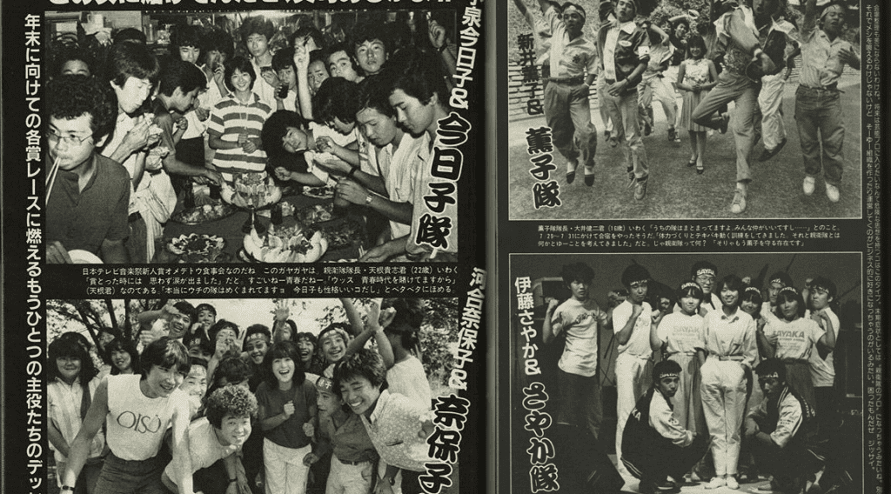

Inspired by Ouendan/Cheering squad(応援団) culture in Japan, many idol otakus organized into groups called Shin'eitai (親衛隊) to cheer for their idol. They used employed various methods such as utilising penlights, chanting and different cheering techniques to support their idol.

2000s-Modern day
the term Otagei originated from a Hello! Project concert in the 2000s to name this form of cheering done by idol Otakus.
Wotagei
Then in 2009, a group called Ginyu Tokusentai started to develop the culture of performing Otagei with penlights.
A departure from cheering for idols during performances, now Otagei is being done as a performance utilising light sticks. Therefore, shifting it to a new section which is now called Wotagei.
How to get started in Wotagei
Wotagei terms
The following are some commonly used terms in wotagei.
Wotagei stance
Your stance in wotagei is very important as it allows you to maintain a low centre of gravity while performing to reduce the chances of falling over due to the extreme movements required by some wazas. One clear example would be Fuuga(風雅) which is an intermediate Torch waza.
The bottom line should be 3 times the top line
Fundamental wazas
These are the most important wazas that wotagei beginners should learn and master first.
(OAD)Over Action Dolphin (関西)
This waza is used during the verse of a song
Rosario (ロザリオ)
This waza is done alot during the pre-chorus
Thundersnake (サンダースネーク)
This waza is a sabi waza done during the chorus
Video to learn can be found in the basic wazas section
Romance (ロマンス)
This waza is used in the middle of the song between the chorus and the following verse
Video to learn can be found in the basic wazas section
Wotagei skill tree
It is recommended to learn some power wazas before getting into torch.
Basic wazas
You can find an overview of the other wazas for beginners to learn below
Learn these after mastering the fundamental wazas
Important basics
The wazas shown in the video below are very important basics that help you develop foundational skills in wotagei.
List of wazas shown in the video in order:
Thundersnake (サンダースネーク)
Amaterasu (アマテラス)
Muramasa (ムラマサ)
Izanagi (イザナギ)
OAD Kansai (Over Action Dolphin 関西)
Tsukuyomi (ツクヨミ)
Romance (ロマンス)
Wotagei trivia
Test your knowledge on wotagei by clicking the button below